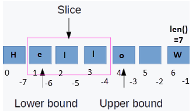
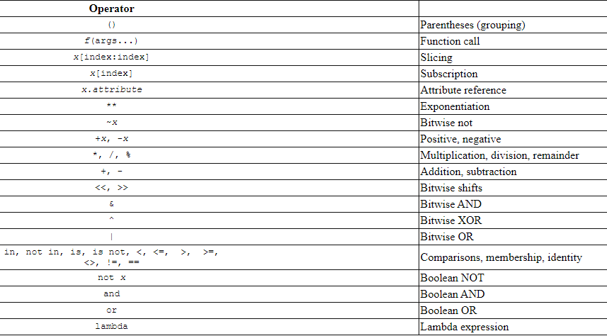

Now that you have worked with numbers, strings, and functions, along with associated logic, there are things you will need to know to round out your work with numbers and strings. We will divide the information based on 3 categories of primitive data types: numbers, strings, and booleans, each of which you have used, although booleans have not formally been introduced. Later, you will see how these data types can be organized into more complex structures.
With the exception of specifying the data types of function arguments and return values, you have noticed that Python does not require a variables to have a specific data type. You can assign the variable x to either a number or a string:
x=5
x="my string"
As a best practice, you won’t want to reuse variables for different purposes, so you probably will want to have several variables, one for each purpose:
x=5
title="My String"
Because functions typically require data types (Object can be any data type), you must ensure that you use a compatible data type or cast it to one. Often, you perform the cast as part of the same statement; for example, if you want to perform addition on an input value you could write:
x=int(input("Enter a number: ")
The input() function returns a string that you can cast to an integer that you can use for addition, multiplication, and so on.
Let’s explore the kinds of operations you can do on either of these data types.
There are 3 numeric data types:
For our purposes, we will only discuss int’s and float’s. Python automatically casts integers to floats and vice versa when performing calculations, so you do not need to use int() and float() to cast between them when you specify a formula or calculation. There are many built-in functions and a math library that you can use. Review the following w3schools pages:
Python uses the same rules as mathematics. To make things work, you may need to use parentheses for more than just clarity. Python evaluates the expression on the right-hand side (RHS) of the equal sign and assigns the result to the variable on the left-hand side (LHS). An expression is evaluated left to right in order of precedence. which causes some operators, such as multiply ( * ) and divide ( / ) to be evaluated before lesser-precedence operators, such as addition ( + ) and subtraction ( - ), which is why you need to use parentheses to specify he order.
For example, the expression you use for converting Fahrenheit to Celsius is (5 / 9) * (in_temp - 32); thus, the expression evaluates to 5/9 inside the left-most set of parentheses multiplied by in_temp-32, which is the next grouping to the left (and in this case, the right-most grouping):
For the boiling point of water, 212F, the result is .55555… times 180, which is 100C and correct.
Without the parentheses, the evaluation would be:
and the resulting temperature would be .5555 times 212 plus 32, or 149.777 repeating, and incorrect.
A string is a group of 0 or more characters. You’ve already printed strings, concatenated strings using the + operator, and compared string constants to the contents of variables. You create a string by assignment, such as s = "abc0123" or my_str = '789xyz. Note that strings can be defined using either single or double quotes; it makes no difference but you should try to be consistent.
The following diagram shows the string 'Hello W': 
Strings start at index position 0 and have a length that can be determined by using the len() function, e.g. str_len = len(temp_str). Individual characters can be accessed by the index, e.g. if variable s is set to 'Hello W', print(s[1])1 prints the second character of a string, which is an e.
It is useful to examine or manipulate a slice of a string, which is a substring of a string using the slice syntax. A slice can be referenced either from the beginning of a string using positive index values, or from the end of a string, using negative values to identify a boundary from the end of a string, as in the following example:
s = "Hello W"
print(s[:]) # print entire string
print(len(s)) # print the length of the string
print(s[:2]) # print the first 2 characters
print(s[:-2]) # print all but the last 2 characters
print(s[2:-2]) # print sting from the 3rd character up to the 2 characters
s += "orld" # append characters to a copy of s
for char in s:
print(char) # print each character in the string
for i in range(1,len(s),2):
# print every other character from the 2nd character to the end of the string
print(s[i])
The string "Hello W" is assigned to the variable s. A slice is defined by an open bracket [ to indicate the start of the slice, a colon (:) to separate the start from the end of the slice and a close bracket ] to indicate the end of the slice. If an index is not specified for the start or end, position 0 or position len(s)-1 is implied; thus, s[:] is a slice that includes all characters. As mentioned earlier and shown in the example, you can specify the start or end a slice from either the start or end of the string.
In the example, s += "orld" is equivalent to s = s + "orld". Both statements concatenate strings using the + operator; += is just a short-hand form of concatenation. At this point note that although the variable name is reused, the actual assignment to a string is immutable, meaning that once a string has been created, in cannot be changed. Thus, even though it appears the statement modifies the string, the s variable name represents 2 different variables; you can test this using a built-in function: id().
Immutability of objects is introduced later; it is a useful property because once you know a value cannot be changed, program logic is simplified. For now, just remember that reassignment to
Although For loops have not yet been formally introduced, you can use them to iterate or traverse a string. The For statement for char in s: enables you to process each character in a string; char is the variable name used in this loop, but you can use any meaningful variable name.
The range() function specifies the string indexes to print in the example. The range specifies the start index position, the end position, and the increment, e.g. 2 specifies every other index position.
For more information about For loops, see Python For Loops, especially Looping Through a String and The range() Function.
Just as with numbers, there are many built-in functions that you can use to manipulate stings. You should review the following w3schools pages:
Boolean values (bool), True and False, are useful for testing truth and communicating the result. Consider the following function that determines whether a temperature scale is Fahrenheit, Celsius, or Kelvin:
def valid_scale(scale: str) -> bool:
if scale == "F" or scale == "C" or scale == "K":
return True
else:
return False
If the scale is in one of those types, the function returns True, meaning that the scale is valid; otherwise, it returns false. The function could be called in the following ways:
while not valid_scale(out_scale):
...
if valid_scale(in_scale) and valid_scale(out_scale):
The while loop executes as long as the out_scale is not valid: not valid_scale(...), means not valid_scale() is True–the scale is not valid. The if block executes if both the in_scale and out_scale are valid.
Order of precedence applies to more than just numeric operators. You have seen them when dealing with strings and logic, such as the if statement. For additional information about operators, see Python Operators. The main ones you will be concerned with most typically, in order of precedence, are:
The following table identifies these operators and shows the order of precedence from highest to lowest for all operators in Python, including ones you have yet to see or look up for yourself: 
Modify your convertTemp project from the previous assignment:
def parse_temp_input(temp_str: str): that accepts a string, such as 212F or 0C, and return its component values, e,g, an int that contains the temperature, e.g. 212 or 0, and the scale, such as 'F', 'C', or 'K'. use slicing on the input string to find the values.print(str(in_temp) + in_scale + ' = ' + str(out_temp) + out_scale) using a built-in function so that the temperature always displays and an integer, e.g. 100F = 38CAnswer the following questions:
(temp * 1.8) + 32 equivalent to temp * 1.8 + 32? Why or why not?s[0] = "x" a valid statement? Why or why not?range option in a For statement?